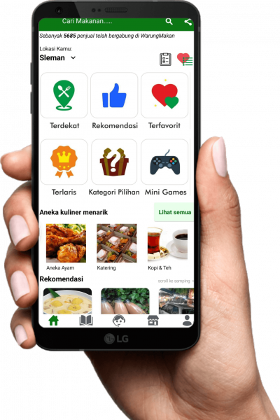

Marketplace Jual Beli Makanan di Seluruh Indonesia
KulinerKu membantu kamu untuk berjualan makanan dan minuman secara online hanya dalam 60 detik! GRATIS!
Temukan berbagai kuliner menarik di sekitarmu!

KulinerKu membantu kamu untuk berjualan makanan dan minuman secara online hanya dalam 60 detik! GRATIS!
Temukan berbagai kuliner menarik di sekitarmu!
Di Indonesia terdapat > 50 juta UMKM makanan dan minuman. Namun tidak semua bisa mengonlinekan jualannya dengan mudah.
Fitur & Pelayanan Terbaik yang kami berikan untuk semua pembeli & penjual.
Tidak butuh waktu lama, dalam 60 detik, kamu bisa mulai berjualan dan terlihat.
Terdapat fitur toko online makanan lengkap dengan info toko, menu, dan review.
Proses transaksi jual, beli, dan review makanan bisa dilakukan dalam 1 aplikasi.
Pembeli dan penjual dapat melakukan komunikasi kontak langsung dengan cepat.
Pembeli dapat melakukan sorting berdasarkan lokasi terdekat dengan mereka.
Penjual dan pembeli tersedia di seluruh wilayah dan kota-kota yang ada di Indonesia.
Apa kata mereka tentang Kulinerku?
Ini aplikasi sangat rekomendasi buat kalian yang mau jualan makanan atau minuman karena sangat mudah berjualan di aplikasi kulinerku dan buat kalian yang mau cari makanan dan minuman juga bisa di kulinerku karena banyak sekali pilihan makanan dan minumannya.
Ary Hermawan
Pengguna Setia KulinerKu
Ini aplikasi sangat rekomendasi buat kalian yang mau jualan makanan atau minuman karena sangat mudah berjualan di aplikasi kulinerku dan buat kalian yang mau cari makanan dan minuman juga bisa di kulinerku karena banyak sekali pilihan makanan dan minumannya.
Andi Setyawan
Penjual Bakso Mahkota Putra
Ini aplikasi sangat rekomendasi buat kalian yang mau jualan makanan atau minuman karena sangat mudah berjualan di aplikasi kulinerku dan buat kalian yang mau cari makanan dan minuman juga bisa di kulinerku karena banyak sekali pilihan makanan dan minumannya.
Srihana Daniyati
Pedagang Kedai Seblak Extra
Kebijakan Privasi
Syarat & Ketentuan
FAQ
Downloads
app.kulinerku@gmail.com
089622233633
© 2022 KulinerKu | All Right Reserved